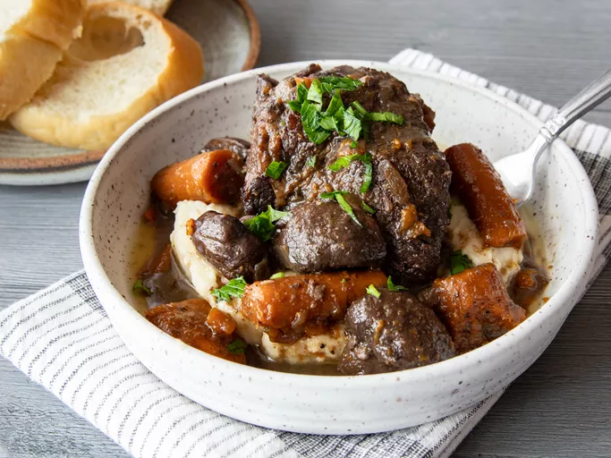

Braised Beef

Slow Cooked Beef In A Pot
Braised beef is a popular and tasty dish involving the slow cooking
of beef with a mix of liquids. The process is similar to stewing, however involves less liquids.
For this recipe, we will be using a mix of beef broth and red wine.
Ingredients Required For This Recipe
- 3 1/2 Pounds Boneless Beef Chunk Roat
- 2 1/2 Teaspoons of Freshly Ground Black Pepper
- 5 Teaspoons Kosher Salt
-
4 Teaspoons of Olive Oil
- 2 Teaspoons of Garlice Powder
- 2 Teaspoons of Butter
- 1 Medium Onion - Chopped
- 1 Pound Cremini Mushrooms - Halved
- 3 Medium Carrots - Cut Into 2 Inch Pieces
- 1 Head of Garlic - Cut In Half Lengthwise
- 1 Cup of Red Wine
- 3 Springs of Thyme
- 2 Bay Leaves
- 2 Teaspoons of Worcestershire
- 2 Cups of Beef Broth
- 2 Tablespoons of Chopped Fresh Parsley
Steps To Making
- Gather all ingredients and preheat the oven to 350 degrees F
or 175 degrees C.

- Season beef pieces evenly on all sides with 3 1/2 teaspoons salt,
2 teaspoons pepper, and garlic powder.

- Heat oil in a large skillet over high heat. Add beef,
reduce heat to medium high and cook, undisturbed until
it releases easily from the skillet and a golden brown
crust has formed, about 4 minutes. Flip pieces and continue
to cook until browned on all sides. Remove meat
from the pan and set aside.

- Return skillet to medium-high heat and add 2 tablespoons
butter to the drippings in the pan. When butter has melted
add onion, mushrooms and carrots and cook 5 minutes,
stirring often, scraping to release any browned bits
from the bottom. Add garlic and cook for 1 minute.

- Stir in wine and scrape to release any more bits from
the pan. Return the meat to the pan, along with any
accumulated juices and add thyme, bay leaves and
Worcestershire.

- Pour in beef broth just enough that it comes up 2/3 of
the way up on the beef (do not fully submerge the meat
in liquid). Bring the mixture to a simmer.

- Cover and place in preheated oven until meat
is very tender, 2 to 2 1/2 hours.

- Serve and enjoy.